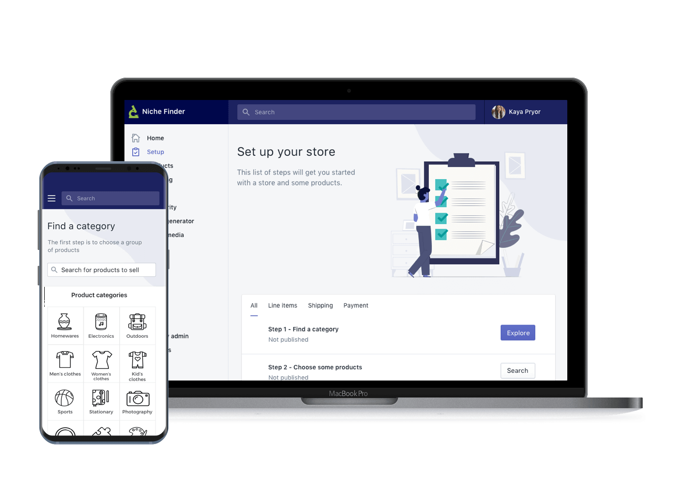

Overview
Shopify is an ecommerce platform that lets people set up a web store and start selling products without knowing how to code. I was approached by a team which had plans to build a tool.
The problem
Shopify approached me with a problem - some of its members weren’t selling products. Stores were being created but remaining inactive, without any products added or traffic. After setting up a store, some users had trouble finding ideas of what to sell. Clearly, this was a cause of frustration for Shopify and its users.
My role
I led efforts to evolve ideas for the service and address customer pain‐points related to their discovery experience.
I partnered with two project managers, two SEO specialists and three back-end developers. I was asked to uncover insights and translate concepts into features that address customer behaviours and motivations.
As part of the larger Shopify product, I was aware that I had to find a solution that shared the vision, design principles and content strategy of Shopify.
Research and understand
We knew our business requirements involved recommending users trending products. To explore user requirements, I interviewed several users. They ranged from beginners to people using Shopify as a side business, to people running a full-time e-commerce business. I also interviewed Shopify employees, who understood how SEO metrics drive higher conversion rates.
These interviews provided the task model:
- • What is already known by the user?
- • What must be learned by using the app?
Using notes from my interviews, I decided on the app’s success metrics:
- • Reduce the risk of users being overwhelmed after setting up a store.
- • Give users the opportunity to find products that the public demands.
- • Boost sales for users.
Insights into competition
I researched into ecommerce and SEO sites. With the development team interested in scraping data from competitors, I focused on AliExpress, Amazon, Google Trends, Namechk, Google Shopping Insights, Keywordtool.io and Thieve.
Condensing data
It was time to identify goals. To give a high-level overview of user needs, I ran my notes through a word cloud tool, to see if any patterns emerged and to find inspiration of what to focus on. Results included:
- • Searching
- • Related
- • Categories
- • New
- • Trust
- • General user
Personas
To help specify a target user, I developed personas based on patterns found in my interview insights. These were given motivations, goals and frustrations. One was a beginner user eager to build a long-term brand and avoid quick trends like fidget spinners.
Another focused on someone who is already selling, but isn’t emotionally attached to the product. They want to sell something of interest, so they’re more invested in having a store. Instead of prioritizing personas, I worked to meet the needs of both target users at the same time.

Requirements analysis
I now had a clearer idea of what requirements the app needed:
- • The app will recommend trending products.
- • The user must be confident that their products can sell.
- • If the user doesn’t know exactly what product they’re interested in, we can recommend product categories, then narrow down into specific products.
- • If the user has an idea of what to sell, they can find results through a search function or product filters.
- • The User can’t be overwhelmed with choice, which can become overwhelming and cause frustration.
- • The app must be accessible for the general user - someone who has recently signed up to Shopfiy and may be a novice with e-commerce platforms.
- • The design must be simple enough to easily scale to mobile devices.
- • The design should fit seamlessly into the information architecture of Shopify’s main functionality.
Finding ideas
To share ideas with users, developers and product managers, I ran a design session where we got together to sketch and share ideas. This allowed us to create ideas, discuss, and present our thoughts. The collaboration was helpful in kickstarting a vision towards the final product, with the strongest concepts in our minds.
The solution
Defining the product
The product would be a web app, which can be installed onto a Shopify user’s dashboard. The app will guide the user to getting their store stocked, registered with a domain, and ready to sell. The working title is ‘Niche Finder’.
Using SEO metrics, the app would highlight and recommend products that have high search volume, and low competition with other Shopify stores. Basically, products that are in demand and have low presence in online marketplaces.
An early user flow requires that users should find an in-demand product niche, choose products from that niche, and push them to their Shopify store. Products would be pulled in from AliExpress, with product data scraped from Thieve. The ability to register for a domain and social media accounts, using existing Shopify tools, would drive the idea of setting up not just a store, but a brand with opportunity for growth.
Building the user journey
The basic functionality was laid out, but I needed a detailed user journey explaining how users would progress through the app. As the MVP was aimed at the beginner Shopify user, the flow had to be simple and self-explanatory. The basic steps were:
- • Step 1: Browse product categories for one of interest.
- • Step 2: Add products from categories to ‘shortlist’ of saved products.
- • Step 3: Customize product information in shortlist.
- • Step 4: Use search volume data to see if chosen products are unique enough to stand out in a marketplace.
- • Step 5: Push products to Shopify store.
- • Step 6: See and register with related available domains and social media accounts.
- • Step 7: Start selling in Shopify store.
Does the architecture meet needs?
I had a user journey structure. Before moving onto wireframes, I had to check my user journey against my business needs and user needs.
- • Can the user sell products quickly? Setup process takes six steps, but could potentially skip steps three and four to bring total steps to four. The fifth step, ‘Push products to store’, is a one-click step. The process of setting up products is relatively quick overall.
- • Are the products able to sell? Checking against search volume data means that the user can be comfortable that people are actively searching for the product, so the user can be confident knowing the product has demand.
- • Can user build a brand? The app will influence users to Shopify’s Business Name Generator and domain-buying platform. This would help users set up a store with long-term potential.
- • If the user is not emotionally attached to products, users have a choice of categories, can easily find something of personal interest.
- • User struggling with a specific product idea. Interviews showed many users had a broad idea of a product range (i.e.: clothes) but not a specific niche (i.e.: hats). The flow of narrowing down from categories to products would help solve this.
- • User intimidated by choice. Several links to Shopify documentation and blog articles would help the user at relevant stages.
After considering the user journey, I was happy that it met the needs of the project, and continued into setting up wireframes.
Sketching an early design
At this point I began quick layout sketches, allowing for experimentation, while considering persona needs and the following questions:
- • How would users interact with certain UI elements over others?
- • How would text influence users?
- • What are e-commerce UX best practices?
I had an idea of the homepage being similar to a to-do list. When a step in the list was completed, it would be marked as complete. This would be easy to follow and allow the user to understand their position in the overall flow.


Testing the design
Once I’d reached a detailed, screen-by-screen user flow, the sketches were cleaned up and developed into a prototype. This was tested with people who were aware of Shopify as a company but who were not users, to capture the target audience of beginner Shopify users.

After testing it became clear that some elements needed to be simplified. The idea of a shortlist, while a feature that would be implemented, was to be scrapped for the initial MVP and added in a later version of the app. Also the step of checking volume was removed. Instead, the search volume metrics would be displayed as part of the product’s information, along with the price.
After the flow of the design had been updated I refined the prototype using Sketch. I then used InVision to build a quick interactive prototype that I shared with the team.

Implementation
Having made amendments to the prototype and presented the results of the user testing, I continued to work closely with the development team, providing assets and markup as well as regularly reviewing to ensure the correct experience and design.


Allowing users to sell with confidence
Shopify's values include that their platform supports the user 'from first sale to full scale'. With this design, we allowed our customer's needs define our quality.
By constantly asking ourselves 'are we building the right thing?' at every stage, we felt confident that we had arrived at a reliable, intuitive and polished product.
